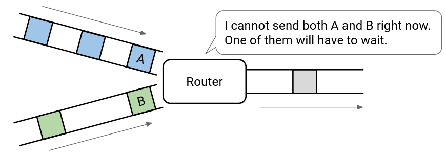
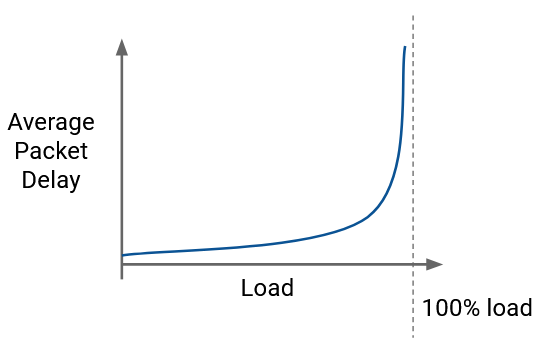
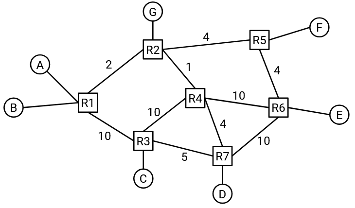
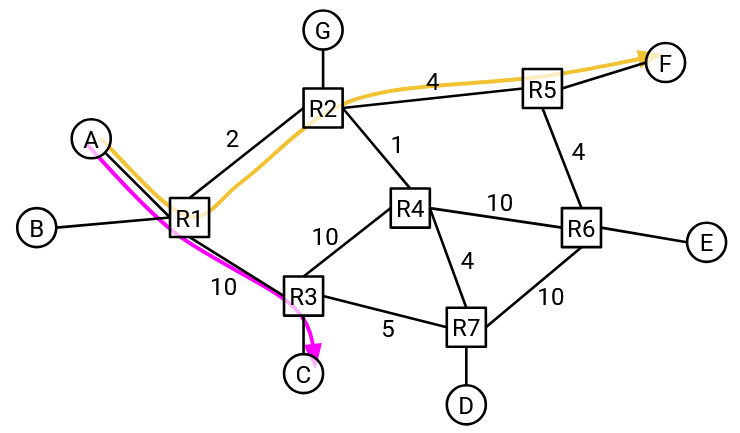
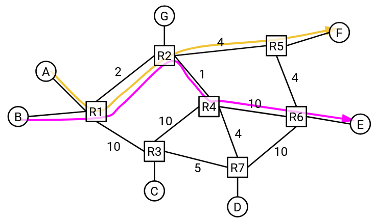
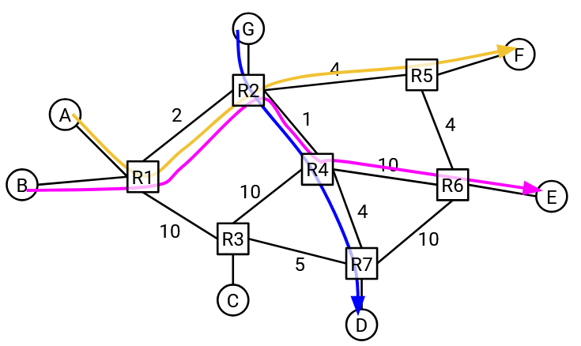
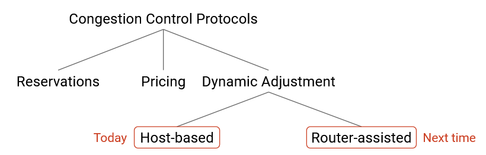

Các Nguyên tắc Kiểm soát Tắc nghẽn
Tắc nghẽn Gây hại
Hãy nhớ lại rằng nếu nhiều packet (gói tin) đến một router (bộ định tuyến) cùng một lúc (ví dụ: bursty traffic (lưu lượng truy cập dồn dập)), và router đó cần gửi tất cả các packet qua cùng một link, thì router sẽ gửi một packet và đặt các packet còn lại vào một queue (hàng đợi) (để được gửi sau).
Tổng quát hơn, nếu tốc độ packet đầu vào vượt quá tốc độ đầu ra mà link có thể duy trì, router sẽ không thể theo kịp tốc độ của các packet đến. Router này đang bị congested (bị tắc nghẽn), và cần phải giữ các packet trong một queue trong khi chúng chờ đến lượt được gửi. Queue có thể gây ra packet delay (độ trễ gói tin). Nếu chính queue trở nên quá đầy mà các packet vẫn tiếp tục đến, thì các packet có thể bị dropped (bị loại bỏ/rớt).
Biểu đồ này cho thấy hiệu suất của một hệ thống hàng đợi với lượng truy cập đến dồn dập. Đường đứt nét biểu thị dung lượng (tải tối đa) của link. Khi chúng ta tăng load (tải), các packet sẽ bị trễ nhiều hơn.
Khi lượng truy cập đến là bursty traffic, chúng ta không thể thực tế sử dụng hết dung lượng tối đa của link. Chúng ta phải tìm một sự cân bằng hiệu suất phù hợp giữa load và packet delay.
Lưu ý rằng biểu đồ bắt đầu dốc lên ngay cả trước khi chúng ta chạm đến đường đứt nét. Điều này có nghĩa là queue đã làm trễ các packet, ngay cả khi chưa có packet nào bị dropped. Vào thời điểm chúng ta đạt đến mức utilization (mức độ sử dụng) tối đa và bắt đầu mất packet, chúng ta đã phải gánh chịu độ trễ packet rất lớn từ queue.
Lược sử về Tắc nghẽn
Vào những năm 1980, TCP (Transmission Control Protocol - Giao thức Điều khiển Truyền vận) không triển khai bất kỳ cơ chế kiểm soát tắc nghẽn nào. Tốc độ gửi chỉ bị giới hạn bởi flow control (điều khiển luồng) (dung lượng bộ đệm của người nhận).
Nếu các packet bị dropped, bên gửi sẽ gửi lại các bản sao của packet đó nhiều lần, với cùng tốc độ nhanh, cho đến khi packet đến nơi. Một cách tiếp cận thông minh hơn là giảm tốc độ để tránh packet bị dropped và giảm số lượng bản sao làm tắc nghẽn mạng, nhưng các triển khai TCP thời kỳ đầu đã không làm điều này.
Vào tháng 10 năm 1986, Internet bắt đầu hứng chịu một loạt các sự kiện congestion collapse (sụp đổ do tắc nghẽn), khi dung lượng của Internet giảm đáng kể. Một link giữa UC Berkeley và Lawrence Berkeley Lab (hai địa điểm cách nhau khoảng 400 yard) đã chứng kiến throughput (thông lượng) của nó giảm từ 32 Kbps = 32.000 bps xuống còn 40 bps.
Michael Karels (sinh viên đại học UC Berkeley) và Van Jacobson (nhà nghiên cứu tại Lawrence Berkeley Lab) đang làm việc trên chồng giao thức mạng trong hệ thống Unix Berkeley (một operating system (hệ điều hành) có ảnh hưởng thời kỳ đầu), và họ nhận ra rằng mạng có hàng ngàn bản sao của cùng một packet, bởi vì mọi người đều đang cố gắng gửi lại các packet bị dropped.
Karels và Jacobson đã phát triển một thuật toán để khắc phục sự cố, thuật toán này đã phát triển thành thuật toán kiểm soát tắc nghẽn TCP hiện đại. Giải pháp của họ là một sửa đổi đối với chính TCP, trong đó window size (kích thước cửa sổ) (quyết định tốc độ gửi packet) được điều chỉnh linh hoạt để phản ứng với việc mất packet.
Bởi vì giải pháp của họ là một sửa đổi logic của TCP (hãy nhớ lại, TCP được triển khai trong operating system), không cần phải nâng cấp router hay các ứng dụng.
Kiểm soát tắc nghẽn TCP là một trong nhiều ví dụ về thiết kế Internet mang tính đặc thù (ad-hoc). Bản vá của Karels và Jacobson chỉ là vài dòng mã bổ sung trong việc triển khai TCP của hệ điều hành BSD. Bản vá đã hoạt động hiệu quả, vì vậy nó nhanh chóng được chấp nhận. Kể từ đó, chủ đề kiểm soát tắc nghẽn đã được nghiên cứu rộng rãi và một số cải tiến đã được thực hiện, nhưng cuối cùng, những ý tưởng cốt lõi trong bản vá ban đầu vẫn tồn tại cho đến ngày nay. Internet đã không còn xảy ra congestion collapse kể từ đó, vì vậy giải pháp ban đầu đã đứng vững trước thử thách của thời gian.
Tại sao Kiểm soát Tắc nghẽn lại Khó?
Để có cảm nhận về lý do tại sao kiểm soát tắc nghẽn là một vấn đề khó khăn, hãy xem xét network graph (đồ thị mạng) sau đây. Host (thiết bị đầu cuối) A nên gửi lưu lượng với tốc độ nào?
Điều đó phụ thuộc vào đích đến, vì vậy A không thể chỉ đưa ra một tốc độ cố định cho tất cả các đích. Ví dụ, nếu A đang giao tiếp với C, thì A có thể gửi packet ở tốc độ 10 Gbps.
Nếu A đang giao tiếp với F thì sao? Bottleneck link (liên kết thắt cổ chai) (dung lượng thấp nhất) trên đường đi này là 2Gbps, vì vậy A có lẽ nên gửi packet ở tốc độ 2 Gbps.
Nếu A đang giao tiếp với E thì sao?
Điều đó phụ thuộc vào đường đi mà lưu lượng đang di chuyển giữa A và E. Nếu lưu lượng đang đi theo đường dưới qua R3, thì A có thể gửi packet ở tốc độ 10 Gbps. Nhưng nếu lưu lượng đang đi theo đường trên qua R2, thì A bây giờ chỉ có thể gửi packet ở tốc độ 1 Gbps.

Một điểm có thể rút ra cho đến nay là thuật toán kiểm soát tắc nghẽn của chúng ta sẽ cần phải tìm hiểu bằng cách nào đó về bandwidth (băng thông) và các bottleneck link trên đường đi mà packet đang di chuyển.
Ngoài ra, hãy nhớ lại rằng network graph thay đổi theo thời gian khi các link mới được thêm vào hoặc các link bị hỏng. Điều này có nghĩa là việc tìm hiểu về các đường đi một lần là không đủ. Thuật toán của chúng ta cần phải thích ứng với những thay đổi trong cấu trúc liên kết mạng.
Cho đến nay, chúng ta đã giả định rằng A là host duy nhất gửi lưu lượng trên mạng và A có thể sử dụng toàn bộ dung lượng của mọi link. Nhưng nếu các connection (kết nối) khác cũng đang sử dụng bandwidth thì sao?
Trong ví dụ này, A và F có một connection, và B và E có một connection. Hai connection này có vẻ hoàn toàn tách biệt (người gửi khác nhau, người nhận khác nhau), nhưng thực tế, đường đi của chúng chia sẻ chung một link trong mạng.
Nếu chúng ta muốn hai connection này chia sẻ dung lượng trên link này một cách công bằng, có lẽ A và B mỗi bên nên gửi ở tốc độ 1 Gbps.
Điều gì sẽ xảy ra nếu một connection mới bắt đầu giữa G và D? A có nên thay đổi tốc độ 1 Gbps của mình không? (Chưa có thuật toán chính thức, chỉ cần suy nghĩ về việc sử dụng bandwidth một cách hợp lý.)
Đầu tiên, hãy lưu ý rằng các connection G-D và B-E đang chia sẻ chung một link. Điều này có nghĩa là hai connection này phải giảm tốc độ xuống còn 0.5 Gbps.
Bây giờ, nếu chúng ta nhìn lại link 2 Gbps mà A-F và B-E có chung, B-E chỉ đang sử dụng 0.5 Gbps trên link này. Điều này có nghĩa là A có thể tăng tốc độ của mình lên 1.5 Gbps.
Chuyện gì đã xảy ra ở đây? Connection G-D được tạo ra, và đường đi của nó không có link nào chung với connection A-F. Tuy nhiên, connection tưởng chừng như không liên quan này lại khiến tốc độ của connection A-F tăng lên. Các connection có thể gián tiếp ảnh hưởng đến các connection khác, ngay cả khi hai connection đó không chia sẻ chung bất kỳ link nào!
Tóm lại: Khi bên gửi đang cố gắng xác định tốc độ gửi packet, nó phải xem xét: Đích đến, đường đi đến đích đó, các connection chia sẻ link trên đường đi đó, và các connection chia sẻ link với những connection đó (cạnh tranh gián tiếp), và cứ thế tiếp diễn. Kiểm soát tắc nghẽn là một vấn đề khó khăn vì tất cả các connection trong mạng đều phụ thuộc lẫn nhau để xác định tốc độ gửi tối ưu của chúng.
Về cơ bản hơn, kiểm soát tắc nghẽn là một bài toán resource allocation (phân bổ tài nguyên). Bandwidth là một tài nguyên có hạn, mỗi connection muốn một lượng tài nguyên nhất định, và chúng ta cần quyết định phân bổ bao nhiêu bandwidth cho mỗi connection.
Resource allocation là một bài toán kinh điển trong khoa học máy tính. (Ví dụ bao gồm các thuật toán lập lịch CPU và phân bổ bộ nhớ.) Tuy nhiên, không giống như một số bài toán resource allocation, sự thay đổi trong việc phân bổ của một connection có thể có tác động toàn cục đến tất cả các connection khác. Ngoài ra, việc phân bổ phải thay đổi mỗi khi một connection được tạo hoặc hủy. Do đó, kiểm soát tắc nghẽn phức tạp hơn bài toán resource allocation truyền thống, và trên thực tế, chúng ta thậm chí không có một mô hình chính thức để định nghĩa bài toán.
Không giống như một bài toán resource allocation truyền thống, nơi thuật toán biết trước về tài nguyên (ví dụ: thời gian CPU) và các công việc (ví dụ: các tiến trình), không có một bộ não trung tâm nào có thể nhìn thấy toàn bộ mạng để phân bổ tài nguyên. Giải pháp của chúng ta phải là decentralized (phân tán), nơi mỗi người gửi tự quyết định việc phân bổ của mình (mặc dù các quyết định của mọi người phụ thuộc rất nhiều vào nhau).
Các Mục tiêu cho một Thuật toán Kiểm soát Tắc nghẽn Tốt
Từ góc độ resource allocation, có ba mục tiêu chúng ta muốn đạt được từ một thuật toán kiểm soát tắc nghẽn tốt.
Chúng ta muốn việc resource allocation phải efficient (hiệu quả). Các link không nên bị quá tải, và phải có packet delay và mất mát packet ở mức tối thiểu. Ngoài ra, các link nên được tận dụng càng nhiều càng tốt.
Chúng ta cũng muốn việc resource allocation phải fair (công bằng) giữa các connection. Chúng ta sẽ định nghĩa chính thức khái niệm công bằng sau, nhưng nói một cách gần đúng, mỗi connection nên chia sẻ một phần bằng nhau của dung lượng có sẵn.
Chúng ta muốn một giải pháp đạt được sự cân bằng tốt giữa các mục tiêu này. Có thể tối ưu hóa một mục tiêu bằng cách hy sinh các mục tiêu khác, nhưng điều đó dẫn đến các giải pháp tồi. Ví dụ, chúng ta có thể đảm bảo utilization link tối đa bằng cách để mọi người gửi packet cực nhanh (giải pháp tồi, gây tắc nghẽn). Hoặc, chúng ta có thể đảm bảo mất packet tối thiểu bằng cách để mọi người gửi packet cực chậm (giải pháp tồi, không tận dụng hết dung lượng).
Từ góc độ hệ thống thực tế hơn, giải pháp mà chúng ta đưa ra cần phải scalable (có khả năng mở rộng) và decentralized. Giải pháp của chúng ta cũng phải có khả năng thích ứng với những thay đổi trong mạng (ví dụ: cấu trúc liên kết thay đổi, các connection được tạo và hủy).
Không gian Thiết kế của các Giải pháp
Như chúng ta đã thấy trước đó, Karels và Jacobson đã sửa lỗi kiểm soát tắc nghẽn TCP bằng cách vá lại việc triển khai TCP trong operating system. Nhưng, nếu chúng ta có thể quay lại và thiết kế lại Internet từ đầu, những thiết kế khả thi nào khác cho kiểm soát tắc nghẽn tồn tại?
Một thiết kế thay thế khả thi là dựa trên reservations (dành riêng/đặt trước). Người gửi có thể yêu cầu bandwidth trước, và sau đó giải phóng bandwidth đó sau khi connection kết thúc. Như đã thảo luận trước đó, việc duy trì một reservation trên toàn bộ mạng đi kèm với nhiều khó khăn kỹ thuật. Cách tiếp cận này cũng có vấn đề vì nó giả định rằng người gửi biết trước mình cần bao nhiêu bandwidth, điều này không nhất thiết phải đúng.
Một thiết kế thay thế khác là dựa trên pricing (định giá). Tương tự như vậy, hãy xem xét các làn đường thu phí nhanh trên đường cao tốc (các làn đường dành riêng chỉ dành cho những người lái xe trả phí). Giá để sử dụng làn đường thu phí nhanh phụ thuộc vào mức độ tắc nghẽn của đường cao tốc. Khi đường cao tốc có rất ít xe, việc sử dụng làn thu phí rất rẻ, và khi có lưu lượng giao thông đông đúc, việc sử dụng làn thu phí sẽ đắt hơn. Một hình thức pricing tắc nghẽn khác xảy ra trong vé máy bay, giá sẽ cao hơn vào những thời điểm bận rộn hơn (ví dụ: ngày lễ).
Để áp dụng pricing tắc nghẽn cho Internet, ISP (Internet Service Provider - Nhà cung cấp dịch vụ Internet) của bạn có thể thêm một nút trong trình duyệt web cho phép tốc độ Internet cao hơn với một khoản phí bổ sung, và khoản phí này có thể thay đổi tùy thuộc vào mức độ tắc nghẽn của Internet. Sau đó, các router có thể ưu tiên gửi packet từ những người dùng trả nhiều tiền hơn, và drop các packet từ những người dùng không trả tiền. Đã có nghiên cứu về pricing tắc nghẽn trên Internet, và các nhà kinh tế đôi khi cho rằng nếu bandwidth là một mặt hàng khan hiếm, thì cấu trúc thị trường sẽ dẫn đến một giải pháp tối ưu. Pricing tắc nghẽn chưa được triển khai rộng rãi, vì nó đòi hỏi một mô hình kinh doanh nào đó kết nối việc thanh toán với tình trạng tắc nghẽn.
Tất cả các thuật toán kiểm soát tắc nghẽn hiện đại (bao gồm cả những thuật toán chúng ta sẽ nghiên cứu) đều dựa trên dynamic adjustment (điều chỉnh động). Các host tự động tìm hiểu mức độ tắc nghẽn hiện tại và điều chỉnh tốc độ gửi của chúng cho phù hợp. Trong thực tế, dynamic adjustment là một giải pháp thiết thực vì nó có thể được tổng quát hóa một cách dễ dàng. Cách tiếp cận này không giả định bất kỳ mô hình kinh doanh nào (cần thiết cho pricing), và không giả định bất cứ điều gì về việc người dùng biết trước bandwidth họ cần (cần thiết cho reservations).
Dynamic adjustment đòi hỏi ý thức công dân tốt. TCP cần mọi người trên mạng làm việc cùng nhau để chia sẻ tài nguyên một cách công bằng. Ví dụ, khi một connection mới bắt đầu sử dụng các link, các connection khác cần phải giảm tốc độ và chia sẻ bandwidth.
Trong cách tiếp cận dynamic adjustment, có hai lớp giải pháp chính. Trong các thuật toán kiểm soát tắc nghẽn host-based (dựa trên host), người gửi giám sát hiệu suất và điều chỉnh tốc độ của mình cho phù hợp. Các thuật toán này được triển khai hoàn toàn tại người gửi, và không có sự hỗ trợ đặc biệt nào từ các router. Việc sửa đổi TCP là một thuật toán host-based, và được triển khai rộng rãi ngày nay.
Trong các thuật toán kiểm soát tắc nghẽn router-assisted (có sự hỗ trợ từ router), các router sẽ gửi thông tin rõ ràng về tắc nghẽn trở lại cho người gửi, để giúp người gửi điều chỉnh tốc độ của mình. Tắc nghẽn xảy ra tại các router, vì vậy các router ở một vị trí tốt để cung cấp thông tin về tắc nghẽn. Các thuật toán router-assisted đã được triển khai trong những năm gần đây, đặc biệt là trong các trung tâm dữ liệu.
Một số thuật toán router-assisted gửi rất ít thông tin, ví dụ: một bit duy nhất cho biết có tắc nghẽn, trong khi các thuật toán khác gửi thông tin chi tiết hơn, ví dụ: tốc độ chính xác mà người gửi nên sử dụng.
Lưu ý rằng trong cả hai trường hợp, các router đều đang báo hiệu tắc nghẽn trở lại cho người gửi. Trong các thuật toán router-assisted, router đang gửi một thông điệp rõ ràng về mức độ tắc nghẽn của nó. Ngược lại, trong các thuật toán host-based, người gửi không nhận được phản hồi rõ ràng từ các router. Thay vào đó, người gửi sử dụng các manh mối ngầm từ router (ví dụ: packet bị dropped hoặc bị trễ) để suy luận rằng router đang bị congested.
Trong sơ đồ phân loại các phương pháp kiểm soát tắc nghẽn này, chúng ta sẽ tập trung vào phương pháp dynamic adjustment, và trong không gian các giải pháp dynamic adjustment, chúng ta sẽ tập trung vào các giải pháp host-based.